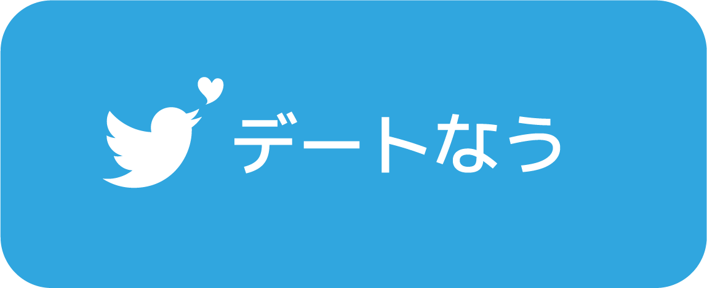

<!DOCTYPE html>
<html>

<head>

    <title>彼女とデートなう。</title>
    <meta charset="utf-8">
    <meta http-equiv="X-UA-Compatible" content="IE=edge">
    <meta name="viewport" content="width=device-width, initial-scale=1">
    <meta name="description" content="今日は、誰とデートする？" />

    <meta name="content-language" content="ja" />
    <meta http-equiv="Content-Type" content="text/html; charset=UTF-8" />
    <meta name="format-detection" content="telephone=no">
    <meta name="twitter:widgets:csp" content="on">

 <script type="text/javascript">
    window.onload = function () {
var posts = [
["彼女ともんじゃなう！ ", "pic.twitter.com/IMpIjnHbeI"],
["橋本環奈とデートなう。 ", "pic.twitter.com/xgA3c3CQuY"],
["真野恵里菜とデートなう。 ", "pic.twitter.com/XsOI2jb5h3"],
["彼女とプールなう ", "pic.twitter.com/Mx4916sjne"],
["顔にヒレがついてる彼女と水族館デートなう ", "pic.twitter.com/iyfqBqOykB"],
["彼女とプールデートなう ", "pic.twitter.com/TB2dnIld3S"],
["彼女と昼ごはんデートなう。 ", "pic.twitter.com/qk0t9vTM3b"],
["志貴とデートなう。 ", "pic.twitter.com/lCyMZADU7B"],
["彼女とデートなう。 ", "pic.twitter.com/GCz30HtCui"],
["彼女とデートなう。 ", "pic.twitter.com/o3r9vSwSN5"],
["ノンスタ井上とデートなう。 ", "pic.twitter.com/U7aJ3ijJyc"],
["彼女とデートなう。 ", "pic.twitter.com/lHEqlEY1JW"],
["彼女とペアプロなう。 ", "pic.twitter.com/CfFtuTc174"],
["彼女とデートなう。 ", "pic.twitter.com/h2ii5j8oeO"],
["彼女とデートなう。 ", "pic.twitter.com/pw1ikgFkm7"],
["彼女とプールデートなう。 ", "pic.twitter.com/agACFqivxh"],
["バナナとデートなう。 ", "pic.twitter.com/GFQjDBVvfI"],
["彼女とデートなう。 ", "pic.twitter.com/4bMD7UGU1X "],
["彼女とデートなう。 ", "pic.twitter.com/3zoJNWvSti"],
["彼女と京都デートなう。 ", "pic.twitter.com/fTGtvLl8SA "],
["彼女と浅草デートなう。 ", "pic.twitter.com/Rx2Eq8VEKg "],
["彼女とデートなう。 ", "pic.twitter.com/ChYkJU7Xy8 "],
["彼女とデートなう。 ", "pic.twitter.com/xgA3c3CQuY "],
["彼女とデートなう。 ", "pic.twitter.com/cBYhFeWFQz "],
["彼女とデートなう。 ", "pic.twitter.com/xgA3c3CQuY "],
["彼女とデートなう。 ", "pic.twitter.com/xgA3c3CQuY "],
["彼女とお家デートなう😘 ", "pic.twitter.com/Mv9bzTr2S8 "],
["彼女と温泉デートなう。 ", "pic.twitter.com/gBWMQDlUJu "],
["彼女とデートなう。", "pic.twitter.com/aVF2M9Lt04 "],
["俺の奢りで彼女と焼き鳥デートなう。 ", "pic.twitter.com/qffmgUL587"],
["トラとデートなう。 ", "pic.twitter.com/ZrkBpjgHca  "],
["仁奈とデートなう。", "pic.twitter.com/bhsyjSCfUL"],
["彼女と魚人島デートなう。",  "pic.twitter.com/pRK3kfeDLi "],
	];

      var post = posts[ Math.floor( Math.random() * posts.length ) ] ;
      var link = '<a href=\"https://twitter.com/intent/tweet?text=' + post[0] + '%0A' + '&hashtags=今日は誰とデートする' + '%0A' + 'url=http://kanojo.date-now.co/' + '%0A' + post[1] + ' rel="nofollow" target="_blank"> </a>';

      target = document.getElementById("output");
      target.innerHTML = link;
	</script>


    <link href="css/4-col-portfolio.css" rel="stylesheet">
    <link rel="stylesheet" href="https://cdnjs.cloudflare.com/ajax/libs/twitter-bootstrap/3.3.7/css/bootstrap.css">
</head>

<body>

  <div id="output"></div>
</body>

</html>
